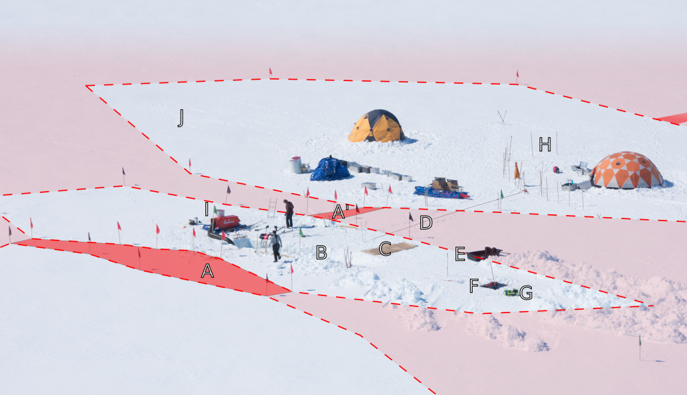
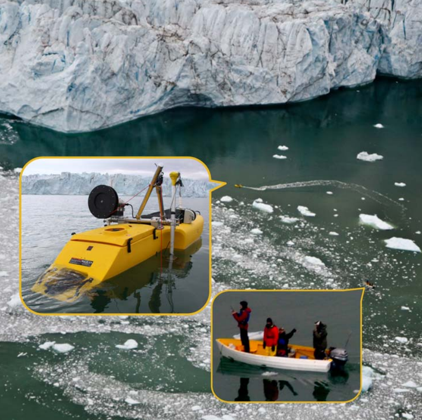
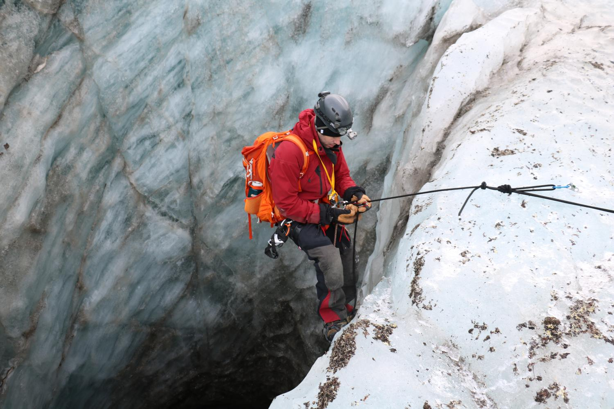
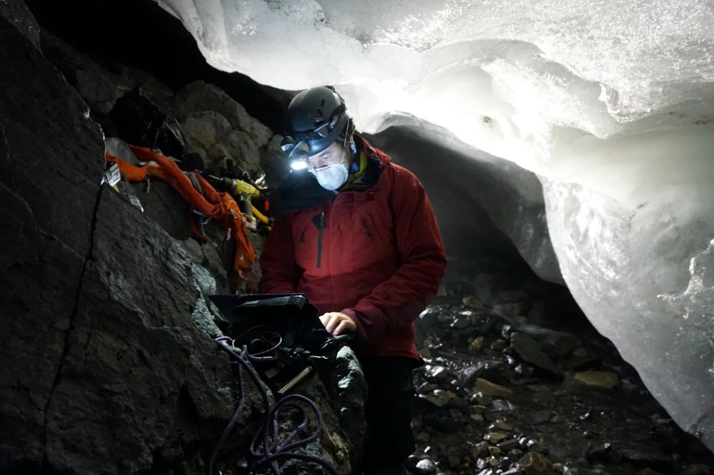
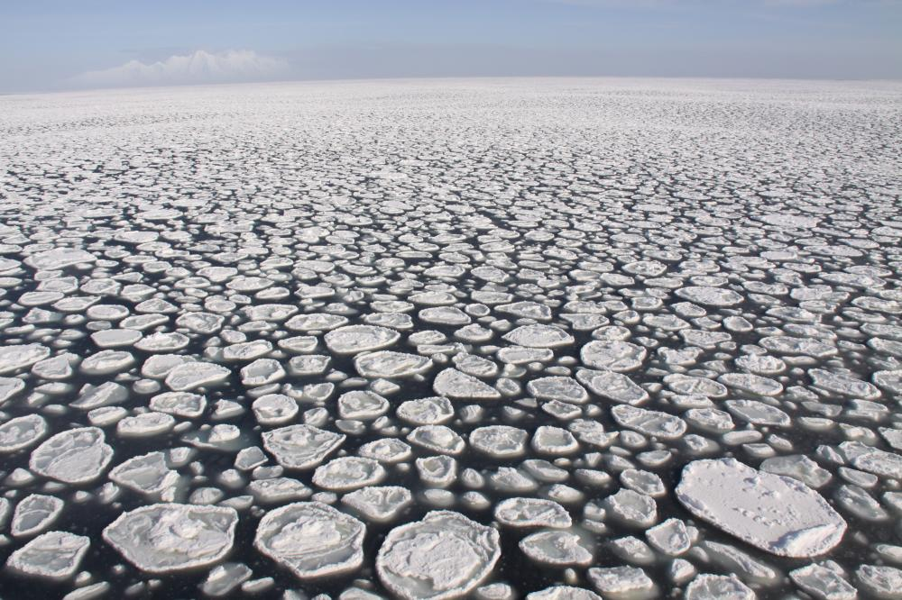
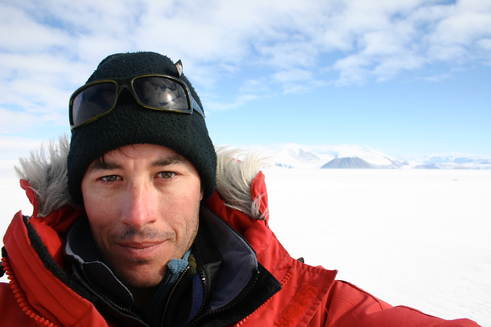

Ken Mankoff
Last update: 2024-02-28 | ChangeLog
Table of Contents
Contact
| Name | Ken Mankoff |
| Current roles | Senior Scientific Programmer, NASA Goddard Institute for Space Studies (GISS) |
| Adjunct Senior Scientist, Geological Survey of Denmark and Greenland (GEUS) | |
| km@kenmankoff.com | |
| CV | http://kenmankoff.com/mankoff_cv.pdf |
| Home Page | http://kenmankoff.com |
| GitHub | http://github.com/mankoff |
About
I am a research scientist studying ice sheets and polar oceans as indicators of climate change. I am formally trained as a computer scientist and earth scientist focusing on polar glacier hydrology and oceanography. I regularly work or have worked in the following areas:
- Collecting data from remote field sites such as underneath a glacier, within a crevasse field, or from the ocean at the edge of calving glaciers.
- Leading logistically complicated field campaigns with international stakeholders and participants ranging from multi-national corporations to Ph.D. students.
- Custom or novel sensors design, development, construction, deployment, operation, and field repair/debugging.
- Reproducible computational workflows and scientific publications using open source tools.
- Climate modeling including coupling ice sheet and global climate models.
- Remote sensing spacecraft operations and mission control, sensor calibration, and end-user imagery use.
- Public outreach and education including popular press interviews, museum display creation, and speaking engagements on all seven continents from the U.N. General Assembly Room to kindergarten classrooms.
For more information, please read the relevant publications or my CV.
Active projects
- Coupling PISM to the NASA GISS ModelE GCM
- Chief Editor (Ice) of Earth System Science Data (ESSD)
- Contributing to GEUS PROMICE Greenland data products
- Co-Chair, Ice Basins and Boundaries IACS working group
- Thinking about glacier geo-engineering
Photos
Here are some photos from some of my fieldwork. Many of these have papers (listed below) describing the project in more detail.
Recovering an airplane engine from a crevasse field
(Photo by Austin Lines)

Driving the WHOI JetYak

Rappelling into a glacier moulin
(Photo by Jennifer Macalady)

Working inside a subglacial conduit
(Photo by Matt Covington)

Pancake ice

Antarctic Selfie

Publications
- My publication list can also viewed on my Google Scholar Profile.
- R. N. Ing, P. W. Nienow, A. J. Sole, A. J. Tedstone, and K. D. Mankoff. Minimal Impact of Late-Season Melt Events on Greenland Ice Sheet Annual Motion. Geophysical Research Letters. 2024, 51 (4). DOI: 10.1029/2023gl106520.
- L. A. Roach, K. D. Mankoff, A. Romanou, E. BlanchardâWrigglesworth, T. W. N. Haine, and G. A. Schmidt. Winds and Meltwater Together Lead to Southern Ocean Surface Cooling and Sea Ice Expansion. Geophysical Research Letters. 2023, 50 (24). issn: 1944-8007. DOI: 10.1029/2023gl105948.
- G. A. Schmidt, A. Romanou, L. A. Roach, K. D. Mankoff, Q. Li, C. D. Rye, M. Kelley, J. C. Marshall, and J. J. M. Busecke. Anomalous Meltwater From Ice Sheets and Ice Shelves Is a Historical Forcing. Geophysical Research Letters. 2023, 50 (24). issn: 1944-8007. DOI: 10.1029/2023gl106530.
- B. Vandecrux, J. E. Box, A. P. Ahlstrøm, S. B. Andersen, N. Bayou, W. T. Colgan, N. J. Cullen, R. S. Fausto, D. Haas-Artho, A. Heilig, D. A. Houtz, P. How, I. Iosifescu Enescu, N. B. Karlsson, R. Kurup Buchholz, K. D. Mankoff, D. McGrath, N. P. Molotch, B. Perren, M. K. Revheim, A. Rutishauser, K. Sampson, M. Schneebeli, S. Starkweather, S. Steffen, J. Weber, P. J. Wright, H. J. Zwally, and K. Steffen. The historical Greenland Climate Network (GC-Net) curated and augmented level-1 dataset. Earth System Science Data. 2023, 15 (12), 5467-5489. issn: 1866-3516. DOI: 10.5194/essd-15-5467-2023.
- A. Løkkegaard, K. D. Mankoff, C. Zdanowicz, G. D. Clow, M. P. Lüthi, S. H. Doyle, H. H. Thomsen, D. Fisher, J. Harper, A. Aschwanden, B. M. Vinther, D. Dahl-Jensen, H. Zekollari, T. Meierbachtol, I. McDowell, N. Humphrey, A. Solgaard, N. B. Karlsson, S. A. Khan, B. Hills, R. Law, B. Hubbard, P. Christoffersen, Jacquemart, Mylène, J. Seguinot, R. S. Fausto, and W. T. Colgan. "Greenland and Canadian Arctic ice temperature profiles database". The Cryosphere. 2023, 17 (9), 3829–3845. DOI: 10.5194/tc-17-3829-2023.
- N. B. Karlsson, K. D. Mankoff, A. M. Solgaard, S. H. Larsen, P. R. How, R. S. Fausto, and L. S. Sørensen. "A data set of monthly freshwater fluxes from the Greenland ice sheet’s marine-terminating glaciers on a glacier–basin scale 2010–2020". GEUS Bulletin. 2023, 53. DOI: 10.34194/geusb.v53.8338.
- P. R. How, P. J. Wright, K. D. Mankoff, B. Vandecrux, R. S. Fausto, and A. P. Ahlstrøm. "pypromice: A Python package for processing automated weather station data". Journal of Open Source Software. 2023, 8 (86), 5298. DOI: 10.21105/joss.05298.
- M. Siegfried, R. Venturelli, M. Patterson, W. Arnuk, T. Campbell, C. Gustafson, A. Michaud, B. Galton-Fenzi, M. Hausner, S. Holzschuh, B. Huber, K. D. Mankoff, D. Schroeder, P. Summers, S. Tyler, S. Carter, H. Fricker, D. Harwood, A. Leventer, B. Rosenheim, M. Skidmore, and J. P. and. "The life and death of a subglacial lake in West Antarctica". Geology. 2023, 51 (5), 434–438. DOI: 10.1130/g50995.1.
- W. Colgan, C. Shields, P. Talalay, X. Fan, A. P. Lines, J. Elliott, H. Rajaram, K. Mankoff, M. Jensen, M. Backes, Y. Liu, X. Wei, N. B. Karlsson, H. Spanggård, and A. Ø. Pedersen. Design and performance of the Hotrod melt-tip ice-drilling system. Geoscientific Instrumentation, Methods and Data Systems. 2023, 12 (2), 121–140. DOI: 10.5194/gi-12-121-2023.
- E. F. Møller, A. Christensen, J. Larsen, K. D. Mankoff, M. H. Ribergaard, M. Sejr, P. Wallhead, and M. Maar. "The sensitivity of primary productivity in Disko Bay, a coastal Arctic ecosystem, to changes in freshwater discharge and sea ice cover". Ocean Science. 2023, 19 (2), 403–420. DOI: 10.5194/os-19-403-2023.
- B. Hasholt, T. F. Nielsen, K. D. Mankoff, V. Gkinis, and I. Overeem. "Sediment concentrations and transport in icebergs, Scoresby Sound, East Greenland". Hydrological Processes. 2022, 36 (10). DOI: 10.1002/hyp.14668.
- M. K. Sejr, A. Bruhn, T. Dalsgaard, T. Juul-Pedersen, C. A. Stedmon, M. Blicher, L. Meire, K. D. Mankoff, and J. Thyrring. "Glacial meltwater determines the balance between autotrophic and heterotrophic processes in a Greenland fjord". Proceedings of the National Academy of Sciences. 2022, 119 (52). DOI: 10.1073/pnas.2207024119.
- J. E. Box, A. Hubbard, D. B. Bahr, W. T. Colgan, X. Fettweis, K. D. Mankoff, A. Wehrlé, B. Noël, M. R. van den Broeke, B. Wouters, A. A. Bjørk, and R. S. Fausto. "Greenland ice sheet climate disequilibrium and committed sea-level rise". Nature Climate Change. 2022, 12 (9), 808–813. DOI: 10.1038/s41558-022-01441-2.
- M. Oksman, A. B. Kvorning, S. H. Larsen, K. K. Kjeldsen, Mankoff, K. D., W. Colgan, T. J. Andersen, N. Nørgaard-Pedersen, M.-S. Seidenkrantz, N. Mikkelsen, and S. Ribeiro. "Impact of freshwater runoff from the southwest Greenland Ice Sheet on fjord productivity since the late 19th century". The Cryosphere. 2022, 16 (6), 2471–2491. DOI: 10.5194/tc-16-2471-2022.
- W. Colgan, A. Wansing, K. D. Mankoff, M. Lösing, J. Hopper, K. Louden, J. Ebbing, F. G. Christiansen, T. Ingeman-Nielsen, L. C. Liljedahl, J. A. MacGregor, Á. Hjartarson, S. Bernstein, N. B. Karlsson, S. Fuchs, J. Hartikainen, J. Liakka, R. S. Fausto, D. Dahl-Jensen, A. Bjørk, J.-O. Naslund, F. Mørk, Y. Martos, N. Balling, T. Funck, K. K. Kjeldsen, D. Petersen, U. Gregersen, G. Dam, T. Nielsen, S. A. Khan, and A. Løkkegaard. "Greenland Geothermal Heat Flow Database and Map (Version 1)". Earth System Science Data. 2022, 14 (5), 2209–2238. DOI: 10.5194/essd-14-2209-2022.
- T. J. Young, P. Christoffersen, M. Bougamont, S. M. Tulaczyk, B. Hubbard, K. D. Mankoff, K. W. Nicholls, and C. L. Stewart. "Rapid basal melting of the Greenland Ice Sheet from surface meltwater drainage". Proceedings of the National Academy of Sciences. 2022, 119 (10), e2116036119. DOI: 10.1073/pnas.2116036119.
- K. D. Mankoff, X. Fettweis, P. L. Langen, M. Stendel, K. K. Kjeldsen, N. B. Karlsson, B. Noël, M. R. van den Broeke, A. Solgaard, W. Colgan, J. E. Box, S. B. Simonsen, M. D. King, A. P. Ahlstrøm, S. B. Andersen, and R. S. Fausto. "Greenland ice sheet mass balance from 1840 through next week". Earth System Science Data. 2021, 13 (10), 5001–5025. DOI: 10.5194/essd-13-5001-2021 [PDF].
- R. S. Fausto, D. van As, K. D. Mankoff, B. Vandecrux, M. Citterio, A. P. Ahlstrøm, S. B. Andersen, W. Colgan, N. B. Karlsson, K. K. Kjeldsen, N. J. Korsgaard, S. H. Larsen, S. Nielsen, A. Ø. Pedersen, C. L. Shields, A. M. Solgaard, and J. E. Box. "Programme for Monitoring of the Greenland Ice Sheet (PROMICE) automatic weather station data". Earth System Science Data. 2021, 13 (8), 3819–3845. DOI: 10.5194/essd-13-3819-2021 [PDF].
- A. Solgaard, A. Kusk, J. P. M. Boncori, J. Dall, K. D. Mankoff, A. P. Ahlstrøm, S. B. Andersen, M. Citterio, N. B. Karlsson, K. K. Kjeldsen, N. J. Korsgaard, S. H. Larsen, and R. S. Fausto. "Greenland ice velocity maps from the PROMICE project". Earth System Science Data. 2021, 13 (7), 3491–3512. DOI: 10.5194/essd-13-3491-2021 [PDF].
- K. Hansen, M. Truffer, A. Aschwanden, K. Mankoff, M. Bevis, A. Humbert, M. R. Broeke, B. Noël, A. Bjørk, W. Colgan, K. H. Kjær, S. Adhikari, V. Barletta, and S. A. Khan. "Estimating Ice Discharge at Greenland's Three Largest Outlet Glaciers Using Local Bedrock Uplift". Geophysical Research Letters. 2021, 48 (14). DOI: 10.1029/2021gl094252 [PDF].
- N. B. Karlsson, A. M. Solgaard, K. D. Mankoff, F. Gillet-Chaulet, J. A. MacGregor, J. E. Box, M. Citterio, W. T. Colgan, S. H. Larsen, K. K. Kjeldsen, N. J. Korsgaard, D. I. Benn, I. J. Hewitt, and R. S. Fausto. "A first constraint on basal melt-water production of the Greenland ice sheet". Nature Communications. 2021, 12 (1). DOI: 10.1038/s41467-021-23739-z [PDF].
- W. Colgan, J. A. MacGregor, K. D. Mankoff, R. Haagenson, H. Rajaram, Y. M. Martos, M. Morlighem, M. A. Fahnestock, and K. K. Kjeldsen. "Topographic Correction of Geothermal Heat Flux in Greenland and Antarctica". Journal of Geophysical Research: Earth Surface. 2021, 126 (2). DOI: 10.1029/2020jf005598 [PDF].
- K. D. Mankoff, B. Noël, X. Fettweis, A. P. Ahlstrøm, W. Colgan, K. Kondo, K. Langley, S. Sugiyama, D. van As, and R. S. Fausto. "Greenland liquid water discharge from 1958 through 2019". Earth System Science Data. 2020, 12 (4), 2811–2841. DOI: 10.5194/essd-12-2811-2020 [PDF].
- K. D. Mankoff, A. Solgaard, W. Colgan, A. P. Ahlstrøm, S. A. Khan, and R. S. Fausto. "Greenland Ice Sheet solid ice discharge from 1986 through March 2020". Earth System Science Data. 2020, 12 (2), 1367-1383. DOI: 10.5194/essd-12-1367-2020 [PDF]
- K. D. Mankoff, D. van As, A. Lines, T. Bording, J. Elliott, R. Kraghede, H. Cantalloube, H. Oriot, P. Dubois-Fernandez, O. Ruault du Plessis, A. Vest Christiansen, E. Auken, K. Hansen, W. Colgan, and N. B. Karlsson. "Search and recovery of aircraft parts in ice-sheet crevasse fields using airborne and in situ geophysical sensors". Journal of Glaciology. 2020, 66 (257), 496-508. DOI: 10.1017/jog.2020.26 [PDF]
- A. Kokhanovsky, J. E. Box, B. Vandecrux, K. D. Mankoff, M. Lamare, A. Smirnov, and M. Kern. "The Determination of Snow Albedo from Satellite Measurements Using Fast Atmospheric Correction Technique". Remote Sensing. 2020, 12 (2), 234. DOI: 10.3390/rs12020234
- A. Kokhanovsky, M. Lamare, O. Danne, C. Brockmann, M. Dumont, G. Picard, L. Arnaud, V. Favier, B. Jourdain, E. Lemeur, B. Di Mauro, T. Aoki, M. Niwano, V. Rozanov, S. Korkin, S. Kipfstuhl, J. Freitag, M. Hoerhold, A. Zuhr, D. Vladimirova, A.-K. Faber, H. C. Steen- Larsen, S. Wahl, J. K. Andersen, B. Vandecrux, D. van As, K. D. Mankoff, M. Kern, E. Zege, and J. E. Box. "Retrieval of Snow Properties from the Sentinel-3 Ocean and Land Colour Instrument". Remote Sensing. 2019, 11 (19), 2280. DOI: 10.3390/rs11192280
- K. D. Mankoff, W. Colgan, A. Solgaard, N. B. Karlsson, A. P. Ahlstrøm, D. van As, J. E. Box, S. A. Khan, K. K. Kjeldsen, J. Mouginot, and R. S. Fausto. "Greenland Ice Sheet solid ice discharge from 1986 through 2017". Earth System Science Data. 2019, 11 (2), 769-786. DOI: 10.5194/essd-11-769-2019 [PDF]
- J. K. Andersen, R. S. Fausto, K. Hansen, J. E. Box, S. B. Andersen, A. P. Ahlstrøm, D. V. As, M. Citterio, W. Colgan, N. B. Karlsson, K. K. Kjeldsen, N. J. Korsgaard, S. H. Larsen, K. D. Mankoff, A. Ø. Pedersen, C. L. Shields, A. Solgaard, and B. Vandecrux. "Update of annual calving front lines for 47 marine terminating outlet glaciers in Greenland (1999–2018)". Geological Survey of Denmark and Greenland Bulletin. 2019, 43. DOI: 10.34194/geusb-201943-02-02.
- W. Colgan, K. D. Mankoff, K. K. Kjeldsen, A. A. Bjørk, J. E. Box, S. B. Simonsen, L. S. Sørensen, S. A. Khan, A. M. Solgaard, R. Forsberg, H. Skourup, L. Stenseng, S. S. Kristensen, S. Hvidegaard, M. Citterio, N. Karlsson, X. Fettweis, A. P. Ahlstrøm, S. B. Andersen, D. van As, and R. S. Fausto. "Greenland ice sheet mass balance assessed by PROMICE (1995 – 2015)". Geological Survey of Denmark and Greenland Bulletin. 2019, 43, e2019430201. DOI: 10.34194/GEUSB-201943-02-01 [PDF]
- R. S. Fausto and the PROMICE team. "The Greenland ice sheet – snowline elevations at the end of the melt seasons from 2000 to 2017". Geological Survey of Denmark and Greenland Bulletin. 2018, 41, 71–74. DOI: 10.34194/geusb.v41.4346.
- Y. Chen, X. Liu, J. D. Gulley, and K. D. Mankoff. "Subglacial Conduit Roughness: Insights From Computational Fluid Dynamics Models". Geophysical Research Letters. 2018, 45, (20), 11206-11218. DOI: 10.1029/2018gl079590
- K. D. Mankoff, J. D. Gulley, S. M. Tulaczyk, M. D. Covington, X. Liu, Y. Chen, D. I. Benn, and P. S. Głowacki. "Roughness of a subglacial conduit under Hansbreen, Svalbard". Journal of Glaciology. 2017, 239, 423–435. DOI: 10.1017/jog.2016.134 [PDF]
- K. D. Mankoff and S. M. Tulaczyk. "The past, present, and future viscous heat dissipation available for Greenland subglacial conduit formation". The Cryosphere. 2017, 11, 303–317. DOI: 10.5194/tc-11-303-2017 [PDF]
- K. D. Mankoff, F. Straneo, C. Cenedese, S. B. Das, C. G. Richards, and H. Singh. "Structure and dynamics of a subglacial discharge plume in a Greelandic fjord". Journal of Geophysical Research: Oceans. 2016, 121(12), 8670-8688. DOI: 10.1002/2016JC011764 [PDF]
- T. O. Hodson, R. D. Powell, S. A. Brachfeld, S. Tulaczyk, R. P. Scherer, and WISSARD Science Team. "Physical processes in Subglacial Lake Whillans, West Antarctica: Inferences from sediment cores". Earth and Planetary Science Letters. 2016, 444, 56–63. DOI: 10.1016/j.epsl.2016.03.036.
- J. A. Mikucki, P. A. Lee, D. Ghosh, A. M. Purcell, A. C. Mitchell, K. D. Mankoff, A. T. Fisher, S. Tulaczyk, S. Carter, M. R. Siegfried, H. A. Fricker, T. Hodson, J. Coenen, R. Powell, R. Scherer, T. Vick-Majors, A. A. Achberger, B. C. Christner, and M. Tranter. "Subglacial Lake Whillans microbial biogeochemistry: a synthesis of current knowledge". Philosophical Transactions of the Royal Society A. 2015, 374 (2059), 20140290. DOI: 10.1098/rsta.2014.0290 [PDF]
- A. T. Fisher, K. D. Mankoff, S. M. Tulaczyk, S. W. Tyler, N. Foley, and the WISSARD Science Team. "High Geothermal Heat Flux Measured below the West Antarctic Ice Sheet". Science Advances. 2015, 1 (6), e1500093. DOI: 10.1126/sciadv.1500093 [PDF]
- A. A. Harpold, J. A. Marshall, S. W. Lyon, T. B. Barnhart, B. Fisher, M. Donovan, K. M. Brubaker, C. J. Crosby, N. F. Glenn, C. L. Glennie, P. B. Kirchner, N. Lam, K. D. Mankoff, J. L. McCreight, N. P. Molotch, K. N. Musselman, J. Pelletier, T. Russo, H. Sangireddy, Y. Sjoberg, T. Swetnam, and N. West. "Laser Vision: Lidar as a Transformative Tool to Advance Critical Zone Science". Hydrology and Earth System Sciences. 2015, 19, 2881–2897. DOI: 10.5194/hess-19-2881-2015 [PDF]
- P. Kimball, J. Bailey, S. B. Das, R. Geyer, T. Harrison, C. Kunz, K. Manganini, K. D. Mankoff, K. Samuelson, T. Sayre-McCord, F. Straneo, P. Traykovski, and H. Singh. "The WHOI Jetyak: An Autonomous Surface Vehicle for Oceanographic Research in Shallow or Dangerous Waters". 2014 IEEE/OES Autonomous Underwater Vehicles (AUV). 1-7. 2014. DOI: 10.1109/AUV.2014.7054430 [PDF]
- S. M. Tulaczyk, J. A. Mikucki, M. R. Siegfried, C. G. Barcheck, L. H. Beem, A. Behar, J. Burnett, B. C. Christner, A. T. Fisher, H. A. Fricker, K. D. Mankoff, F. Rack, J. C. Priscu, R. D. Powell, D. Sampson, R. P. Scherer, S. Y. Schwartz, and the WISSARD Science Team. "WISSARD at subglacial Lake Whillans: Scientific operations and initial observations". Journal of Glaciology, 5(65), 2014. DOI: 10.3189/2014AoG65A009 [PDF]
- B. C. Christner, J. C. Priscu, A. M. Achberger, C. Barbante, S. P. Carter, K. Christianson, A. B. Bichaud, J. A. Mikucki, A. C. Mitchell, M. L. Skidmore, T. J. Vick-Majors, and The WISSARD Science Team. "A microbial ecosystem beneath the West Antarctic ice sheet". Nature, 512:310 - 313. 2014. DOI: 10.1038/nature13667 [PDF]
- K. D. Mankoff and T. A. Russo. "The Kinect: A low-cost, high-resolution, short-range, 3D camera". Earth Surface Processes and Landforms, 38(9):926 - 936, 2013. DOI: 10.1002/esp.3332 [PDF]
- K. D. Mankoff, S. S. Jacobs, S. M. Tulaczyk, and S. E. Stammerjohn. "The role of Pine Island Glacier ice shelf basal channels in deep-water upwelling, polynyas and ocean circulation in Pine Island Bay, Antarctica". Annals of Glaciology, 53(60):23 - 28, 2012. DOI: 10.3189/2012AoG60A062 [PDF]
- S. Passchier, G. Browne, B. Field, C. R. Fielding, L. A. Krissek, K. Panter, S. F. Pekar, and ANDRILL-SMS Science Team. "Early and middle Miocene Antarctic glacial history from the sedimentary facies distribution in the AND-2A drill hole, Ross Sea, Antarctica". Geological Society of America Bulletin. Apr. 2011, 123 (11-12), 2352–2365. DOI: 10.1130/b30334.1
- T. D. Frank, Z. Gui, and the ANDRILL SMS Science Team. "Cryogenic origin for brine in the subsurface of southern McMurdo Sound, Antarctica". Geology. July 2010, 38 (7), 587–590. DOI: 10.1130/g30849.1
- S. Warny, R. A. Askin, M. J. Hannah, B. A. R. Mohr, J. I. Raine, D. M. Harwood, F. Florindo, and the SMS Science Team. "Palynomorphs from a sediment core reveal a sudden remarkably warm Antarctica during the middle Miocene". Geology. Oct. 2009, 37 (10), 955–958. DOI: 10.1130/g30139a.1
- S. P. Shukla, M. A. Chandler, J. Jonas, L. E. Sohl, K. D. Mankoff, and H. J. Dowsett. "Impact of a Permanent El Nino and Indian Ocean Dipole in Warm Pliocene Climates". Paleoceanography, 24(PA2221), 2009. DOI: 10.1029/2008PA001682 [PDF]
- L. T. Huffman, R. H. Levy, L. Lacy, D. M. Harwood, M. Berg, M. Cattadori, J. Diamond, J. Dooley, L. Dahlman, R. Frisch-Gleason, J. Hubbard, R. Lehmann, K. D. Mankoff, V. Miller, K. Pound, G. S. di Clemente, A. Siegmund, J. Thomson, E. Trummel, R. Williams, and The ANDRILL SMS Project Science Team. "Education and Outreach in the ANDRILL McMurdo Ice Shelf (MIS) and the Southern McMurdo Sound (SMS) Projects, Antarctica". Terra Antarctica, 15(1):221 - 235, 2008. [PDF]
- D. Mankoff, A. Dey, J. Mankoff, and K. D. Mankoff. "Supporting interspecies social awareness: using peripheral displays for distributed pack awareness". Proceedings of the 18th annual ACM symposium on User interface software and technology. ACM New York, NY, USA. 2005, pp. 253–258.
- S. M. Petrinec, W. L. Imhof, C. A. Barth, K. D. Mankoff, D. N. Baker, and J. G. Luhmann. "Comparisons of thermospheric high-latitude nitric oxide observations from SNOE and global auroral X-ray bremsstrahlung observations from PIXIE". Journal of Geophysical Research, 108(A3):1223, 2003. DOI: 10.1029/2002JA009451>10.1029/2002JA009451 [PDF]
- C. A. Barth, K. D. Mankoff, S. M. Bailey, and S. C. Solomon. "Global observations of nitric oxide in the thermosphere". Journal of Geophysical Research, 108(A1):1027, 2003. DOI: 10.1029/2002JA009458 [PDF]
- C. A. Barth, D. N. Baker, K. D. Mankoff, and S. M. Bailey. "Magnetospheric control of the energy input into the thermosphere". Geophysical Research Letters, 29(13):1629, 2002. DOI: 10.1029/2001GL014362 [PDF]
- D. N. Baker, C. A. Barth, K. D. Mankoff, S. G. Kanekal, S. M. Bailey, G. M. Mason, and J. E. Mazur. "Relationships between precipitating auroral zone electrons and lower thermospheric nitric oxide densities: 1998-2000". Journal of Geophysical Research, 106(A11):24465 - 24480, 2001. DOI: 10.1029/2001JA000078 [PDF]
- C. A. Barth, D. N. Baker, K. D. Mankoff, and S. M. Bailey. "The northern auroral region as observed in nitric oxide". Geophysical Research Letters, 38(8):1463 - 1466, 2001. DOI: 10.1029/2000GL012649 [PDF]